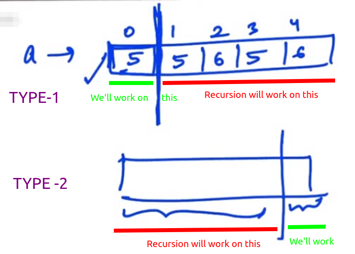
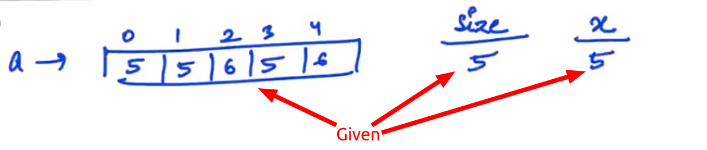
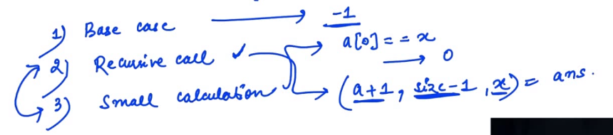
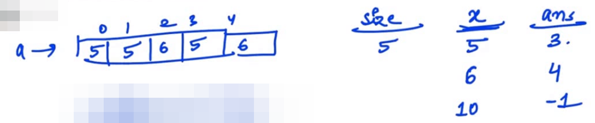
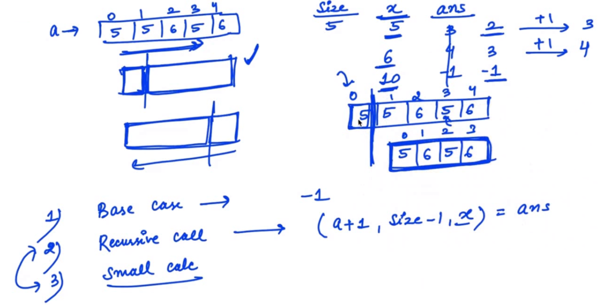
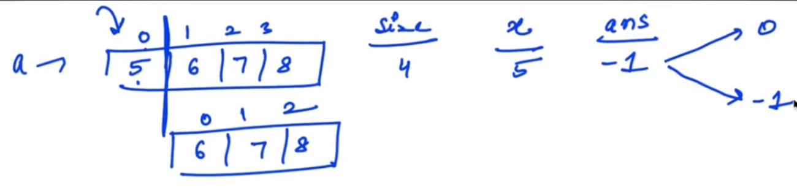
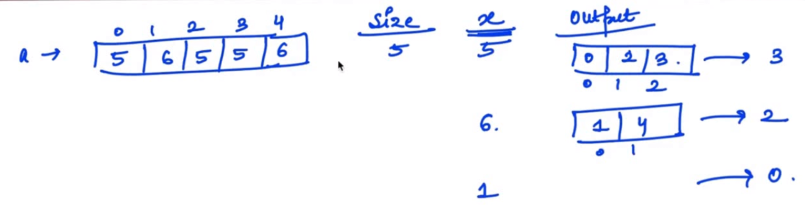
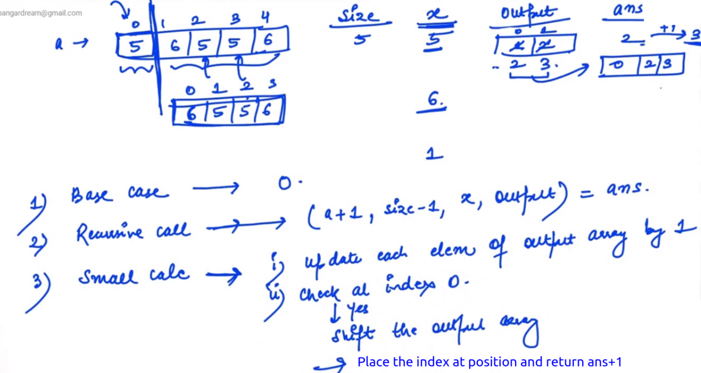

Recursion
Any function which calls itself is called recursive. A recursive method solves a problem by calling a copy of itsef to work on smaller problem. This is called the
recursive step. It's important to insure that the recursion terminates, by using a
base condition/base case.
Note : Whenever a recursion question comes do 3 steps:
1) Break Condtion
2) Recursive Step
3) Small Calculation
2 and 3 can be interchanged.
~~~~~~~~~~~~~~~~~~~~~~~~~~~~~~~~~
Que: Find Factorial of n?//Find Factorial of N
#include<stdio.h>
int fact(int n){
//Base Condition1
if(n==0 || n==1){
return 1;
}
//Recursive Steps
int s1=fact(n-1);
return n*s1;
}
int main(){
int n=fact(5);
printf("%d",n);
return 0;
}
~~~~~~~~~~~~~~~~~~~~~~~~~~~~~~~~~
Que: Find Nth Fibonacci number//Find Nth Fibonacci number
#include<stdio.h>
int fib(int n){
//Base Condition1
if(n==0){
return 0;
}
//Base Condition 2
if(n==1){
return 1;
}
//Recursive Steps
int s1=fib(n-1);
int s2=fib(n-2);
return s1+s2;
}
int main(){
int n=fib(6);
printf("%d",n);
return 0;
}
~~~~~~~~~~~~~~~~~~~~~~~~~~~~~~~~~
Note for array problems we have two ways:
Generally, In case of arrays
Base case : When Size =0~~~~~~~~~~~~~~~~~~~~~~~~~~~~~~~~~
Que: Find the first occurance of x? Return index number. For X=5 Ans =0

Lets use Type 1:
//Return the first index of x in array
#include<stdio.h>
int ret(int a[],int siz,int x){
if(siz==0){
return -1;
}
if(a[0]==x){
return siz;
}
int ans=ret(a+1,siz-1,x);
return ans;
}
int main(){
int a[]={1,2,3,4,4,2};
int siz=6;
int ans=ret(a,siz,4);
if(ans!=-1)
ans=siz-ans;
printf("%d",ans);
return 0;
}
~~~~~~~~~~~~~~~~~~~~~~~~~~~~~~~~~
Que: Find the index of last occurance of x
Let's use type 2//Return the last index for occurance of x in array
#include<stdio.h>
int ret(int a[],int siz,int x){
if(siz==0){
return -1;
}
if(a[siz]==x){
return siz;
}
int ans=ret(a,siz-1,x);
return ans;
}
int main(){
int a[]={1,2,3,4,4,2};
int siz=6;
int ans=ret(a,siz,2);
printf("%d",ans);
return 0;
}


//Return the last index for occurance of x in array
#include<stdio.h>
int ret(int a[],int siz,int x){
if(siz==0){
return -1;
}
int ans=ret(a+1,siz-1,x);
if(ans==-1){
if(a[0]==x)
return 0;
else
return -1;
}
else
return ans+1;
}
int main(){
int a[]={1,2,3,4,4,2};
int siz=6;
int ans=ret(a,siz,1);
printf("%d",ans);
return 0;
}
~~~~~~~~~~~~~~~~~~~~~~~~~~~~~~~~~
Que:
Return all index for occurance of x in array
With Type 1
// CPP program to find all indices of a number
#include <bits/stdc++.h>
using namespace std;
// A recursive function to find all
// indices of a number
int AllIndexesRecursive(int input[], int size,
int x, int output[])
{
// If an empty array comes
// to the function, then
// return zero
if (size == 0) {
return 0;
}
// Getting the recursive answer
int smallAns = AllIndexesRecursive(input + 1,
size - 1, x, output);
// If the element at index 0 is equal
// to x then add 1 to the array values
// and shift them right by 1 step
if (input[0] == x) {
for (int i = smallAns - 1; i >= 0; i--) {
output[i + 1] = output[i] + 1;
}
// Put the start index in front
// of the array
output[0] = 0;
smallAns++;
}
else {
// If the element at index 0 is not equal
// to x then add 1 to the array values
for (int i = smallAns - 1; i >= 0; i--) {
output[i] = output[i] + 1;
}
}
return smallAns;
}
// Function to find all indices of a number
void AllIndexes(int input[], int n, int x)
{
int output[n];
int size = AllIndexesRecursive(input, n,
x, output);
for (int i = 0; i < size; i++) {
cout << output[i] << " ";
}
}
// Driver Code
int main()
{
int arr[] = { 1, 2, 3, 2, 2, 5 }, x = 2;
int n = sizeof(arr) / sizeof(arr[0]);
// Function call
AllIndexes(arr, n, x);
return 0;
}